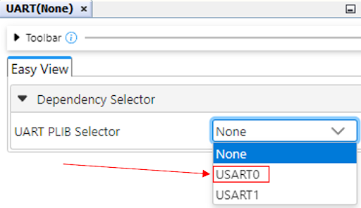

Getting Started
Required Materials
- MP LAB X IDE and Compiler
- Curiosity Nano AVR64DD32 board
- USB to connect board to computer
Learning Objective
- Using MCC Melody
- Viewing pin configurations
- Configuring and using the UART
- Configuring and using the on board timers
UART and Timer explanation
The UART is the on board serialization tool used to write data from the microcontroller back to the
connected device. This functions very similarly to how it did in the Arduino based microcontroller lab
course, but with a few setup differences that we will explore in the setup section.
The Timer(s) on board allow us a way to perform methods at a certain “step” or timeout (defined in
milliseconds). These provide callback registers for the microcontroller to call back to after each time
the timer ticks, which will be a very useful tool going forward.
Setting Up UART and Timer
In this lab, we will create a new project in MPLAB X IDE and configure essential peripherals using MPLAB Code Configurator (MCC). The objective is to set up and initialize UART for serial communication and configure a timer to generate periodic interrupts that will trigger an interrupt handler. By following these steps, you will gain hands-on experience with configuring microcontroller peripherals in a development environment.
- Creating the Project
- Open MPLAB X IDE
- Navigate to File → New Project → Application Project(s) → Next.
- Select AVR64DD32 as the target device → Next.
- Choose xc8 as the compiler → Next.
- Name the project mplab_lab1 → Finish.
- Configuring UART
- Click the MCC icon to open the MPLAB Code Configurator (covered in Lab 0). This will launch the Application Builder.
- In the Resource Management tab:
- Under Device Resources, expand Drivers.
- Locate UART and select UART Example.
- In the Application Builder, click the gear icon next to UART Example.
-
Under the UART Example tab, set:
- Example Selection: UART Write String
- Example Implementation: Polled
-
Back in Device Resources:
- Select UART.
- Click <Add Dependency> for the new UART Application Builder component.

- Click the gear icon and choose USART0 under Dependency Selector. The USART acts as an interface between the UART and the bare metal. We picked USART0 because it is mapped to ports 4 and 5, which are connected to the onboard debugger on the Curiosity Nano. 
-
In the Configuration Settings, set:
- Custom Name: UART
- Requested Baudrate: 115200
- Keep the remaining settings at default.

-
Configuring the Timer
- Under Device Resources, select Timer
- Click on the gear icon next to <Add Dependency>.
- Under Dependency Selector, select TCB0.
- Keep the default settings - 1 millisecond is sufficient as our timer clock frequency.
- At this point, your Application Builder diagram should reflect these configurations.
-
Before generating the code, ensure to set the following configurations are set by pressing
the gear icon next to each System component:
- CLKCTRL: Default settings are applied.
- Interrupt Manager: Global interrupts are enabled to allow interrupt-driven events.
-
Configuration Bits: These bits define the personality of the microcontroller
at startup.
- Reset Pin Configuration: Set to Reset mode.
-
Pin Configuration (pictured below):
- USART: Open the Pin Grid View to assign pins 4 and 5 under PORTD to USART for serial communication. When a pin is assigned to a peripheral, a green lock icon appears on it, indicating that the pin is successfully acquired.

- Generate Code
- Under Resource Management [MCC], click on Generate. This will create a main.c file and a directory named MCC Generated Files under Source Files. This directory contains all the automatically generated code for the components selected in the Application Builder.
- ☢️ Warning: Do not store or modify your source code inside the "MCC Generated Files" folder. This directory is managed by the MPLAB Code Configurator (MCC), and any changes made manually will be overwritten the next time code is generated.
- In main.c, we import the generated code using the directive:
#include "mcc_generated_files/system/system.h" - To initialize the configured peripherals, we call:
- A quick Ctrl + B (or Right-click → Navigate → Go to Declaration/Definition) over SYSTEM_Initialize() will take you to its function definition in system.c. Here, you can see how each selected component is initialized.
SYSTEM_Initialize();
Main.c
Now that the project is configured, we will demonstrate how to implement blocking vs non-blocking operations using timer callbacks and atomic operations. The following code is written in mplab_lab1/Source Files/main.c.
-
For this lab, we will need to import the following libraries:
- mcc_generated_files/system/system.h – required to interact with project dependencies (peripherals) from Device Resources
- string.h – utility library for working with sequences of characters (strings)
- stdio.h – library for working with sources of data (streams). We will use sprintf() for printing numeric values to the console.
- util/delay.h – imported to use _delay_ms() function (see Lab 0)
#include "mcc_generated_files/system/system.h" #include <string.h> #include <stdio.h> #include <util/delay.h> -
Projects in MPLAB X IDE are coded in the C programming language, which preprocesses files from top
to bottom, meaning the compiler will fail to find the definition of functions called in main that
are defined after the main function. To solve this problem, we define the function prototypes
before
the main function.
void UART_WriteString(const char *message); uint32_t read_timer(void); void clear_timer(void); void tcb_softtimer(void); void non_blocking(void); void blocking(void); void blink_led(void); -
We define a timer variable for keeping track of our timer. The volatile keyword means that
the value
can change when reading it. This is used to indicate that more than one thread can modify the
variable. We will also define an fixed length array of characters to be used as a buffer for sending
data through the UART.
volatile uint32_t timer = 0; char uart_string[80]; -
Here is the main function of the project, let's walk through what each line does:
int main(void) { SYSTEM_Initialize(); PORTF_set_pin_level(5, 1); UART_WriteString("Program is starting...\r\n"); _delay_ms(1000); Timer0.TimeoutCallbackRegister(tcb_softtimer); clear_timer(); while(1) { non_blocking(); } }-
First, we initialize project dependencies through SYSTEM_Initialize(). This sets up the
UART, TCB0 Timer, and other resources needed by the project
SYSTEM_Initialize(); -
We set PORTF_5 (pin 25, onboard debugger LED) to a value of 1 (high). This functionally
turns off the LED (remember that the AVR64DD32 is active-low)
PORTF_set_pin_level(5, 1); -
We write a startup message to the UART. “\r\n” is the Windows standard line terminator for
console output just like how sentences with terminated with periods
UART_WriteString("Program is starting...\r\n"); -
Wait 1 second for internal microcontroller processes such as oscillator stabilization and
power-on reset to finish
_delay_ms(1000); -
Register a function to Timer0 callback. A callback is a function that is passed into a
process to be called at a later time when the process has completed. The process in this
instance is a timer finishing its cycle (every 1ms as set in the Application Builder)
Timer0.TimeoutCallbackRegister(tcb_softtimer); -
Clear the timer value so it starts at 0 when we enter the main loop
clear_timer(); -
In the infinite loop, we call the non_blocking() function.
while(1) { non_blocking(); }
-
First, we initialize project dependencies through SYSTEM_Initialize(). This sets up the
UART, TCB0 Timer, and other resources needed by the project
-
In this project, we have a timer that can be accessed via read_timer(), incremented via
tcb_softtimer(), and modified via clear_timer(). When we are reading the value, it is
possible for another thread
to clear or increment the value while we are reading. This is called a race condition since
we do not know if we are reading the original value or the modified value.
In order to avoid a race condition, we need to implement both read_timer(),
tcb_softtimer(), and clear_timer() as atomic functions. An atomic function is
an operation that cannot be
interrupted by another thread and is guaranteed to fully execute. In order to make a function
atomic, we will use
the cli() and sei() functions from the interrupt.h library:
-
After the main function, we define the read_timer() and clear_timer()
functions. The cli()
function disables all interrupts and the sei() function re-enables all interrupts.
uint32_t read_timer(void) { uint32_t timer_val; cli(); timer_val = timer; sei(); return timer_val; } void clear_timer(void) { cli(); timer = 0; sei(); } void tcb_softtimer(void) { cli(); timer++; sei(); }
-
After the main function, we define the read_timer() and clear_timer()
functions. The cli()
function disables all interrupts and the sei() function re-enables all interrupts.
-
This is the definition of our blocking() function. In this function, we do the following:
- Define a static variable called loop_count and set it to zero. Remember that static means that the value is persistent after every function call.
- Increment the loop_count variable.
- Print the value of loop_count to the string buffer, then write the string buffer to the UART.
- Blink the LED then wait for a second.
As previously mentioned, a callback is a function that is passed into a process to be called at a later time when the process has completed. In this project, we are using the Timer0 callback register to increment our timer variable at the end of each clock cycle. This effectively allows us to time our functions calls without blocking our main execution cycle, since every cycle is roughly 1 millisecond.void blocking(void) { static unsigned int loop_count = 0; loop_count++; sprintf(uart_string, "Loop count: %u\r\n", loop_count); UART_WriteString(uart_string); blink_led(); _delay_ms(1000); } -
This is the definition of our non_blocking() function called in the infinite while loop in
main.
While non_blocking() and blocking() are functionally the same, there is one main
difference: We wrap
the functionality in an if statement that uses read_timer() to check if a second has elapsed.
Notice how we did not use _delay_ms() in the above code, this makes it a non-blocking function since it did not suspend (or pause) the main execution flow. In essence, a non-blocking function allows the program to continue while it does its operations in the background and a blocking function blocks the program from continuing until the function is done.void non_blocking(void) { static unsigned int loop_count = 0; if (read_timer() > 1001) { loop_count++; sprintf(uart_string, "Loop count: %u\r\n", loop_count); UART_WriteString(uart_string); blink_led(); } } -
The blink_led function is implemented as a blocking function. However, instead of using the
_delay_ms() function, we utilize a while loop to repeatedly check the timer until a second
has
elapsed.
void blink_led(void) { clear_timer(); PORTF.OUT &= ~(1 << 5); while (read_timer() < 1000); PORTF.OUT |= (1 << 5); clear_timer(); } -
UART_WriteString() is a utility method generated by the UART_Example Device Resource that can
be
found under Source Files ü†ñ MCC Generated Files ü†ñ examples ü†ñ UART_Example ü†ñ
uart_example.c. The
function writes a string through the UART using a polling implementation (ie. continuously checking
if the UART is ready)
- Add the following UART_WriteString() definition to your code.
❓Fact: Notice how the UART Write call is preceded with a void cast. This is used to tell the compiler that we are not using the return value of UART0.Write. MPLAB generated code tends to put void casts on all function calls.void UART_WriteString(const char *message) { for(int i = 0; i < (int)strlen(message); i++) { while(!UART0.IsTxReady()) { } (void) UART0.Write(message[i]); } } - Save changes made to main.c by pressing Ctrl + S or by navigating to the top left of MPLAB and clicking on File ➡ Save
- Click the Build for Debugging Main Project button on the toolbar to build the project. Then, click on the Make and Program Device Main Project button to send the program to the board.
- Navigate to Window ➡ Debugging ➡ Data Visualizer. We will use Data Visualizer to read the UART output.
- Under the Terminal sub window on the right, select the AVR64DD32 COM X option under Source.
- Click on the settings icon next to the Source dropdown and set the baud rate to 115200, it should be the same value as Requested Baudrate in UART0 in Application Builder.
- Press the Start Capturing button and you should start seeing text show up in the terminal.
- To restart the program, press the Hold in Reset button on the toolbar